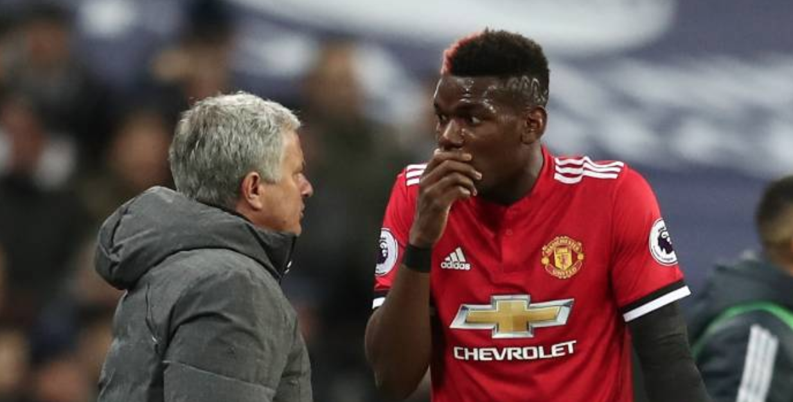
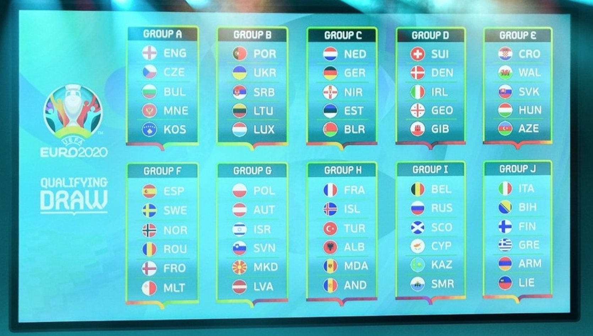

Brexit Talk reach stalemate
On 26 July 2016, just over one month after the Brexit Referendum, Enda Kenny had lunch with British Prime Minister Theresa May in Downing Street. Afterwards, the former taoiseach said: "We are both agreed very firmly there will be no return to a hard border as existed."
Read more

Mourihno Pogba Feud Ends
MANCHESTER UNITED boss Jose Mourinho has denied there was ever a rift between him and £89million man Paul Pogba.
Rumours have swirled all season that Mourinho and his maverick French midfielder have had a series of bust-ups. More to follow as news continues.
Read more

I’m A Celebrity launch episode breaks ratings record
The first episode of the new series of I’m A Celebrity… Get Me Out Of Here! – starring new presenter Holly Willoughby – has become the most-watched launch episode in the show’s history. ITV said the episode has been watched by 13.7 million viewers.
Read more

China sets out for the moon
China's ambitious program of lunar exploration is about to attempt a spacefaring first: On 8 December it will launch a probe intended to land on the far side of the moon. Besides boasting rights, the Chang'e-4 lander and rover are expected to produce a host of new insights into the moon's composition and history.
Read more

EURO 2020 qualifying draw
Gareth Southgate's England were handed a straightforward path to the 2020 European Championship at Sunday's qualification draw in Dublin. England will play Czech Republic, Bulgaria, Montenegro and new opponents Kosovo in Group A with the top two progressing to the finals that will be played across 12 host cities.
Read more

Homelessness cannot be completely eradicated - Taoiseach
Taoiseach Leo Varadkar has said homelessness is one of the issues that keeps him awake at night. Speaking on RTÉ's Late Late Show, Mr Varadkar said it was particularly troubling that so many children were being forced to live in temporary accommodation.
Read more

Donald and Melania get into the Christmas spirit
With Thanksgiving behind us, the White House has transformed into a beautifully-decorated backdrop for holiday parties hosted by President Donald Trump and First Lady Melania. The White House Christmas Reception welcomed a group of people into a fully-decorated home
Read more

Musk scraps plans for Los Angeles
Elon Musk has scrapped his plans to dig through an affluent section of west Los Angeles after his tunneling company reached a settlement in an environmental review lawsuit. The Boring Company “is no longer seeking the development of the Sepulveda test tunnel .
Read more

Intelligence helps predict volcanic
Satellites are providing torrents of data about the world’s active volcanoes, but researchers have struggled to turn them into a global prediction of volcanic risks. That may soon change with newly developed algorithms that can automatically tease from that data signals of volcanic risk.
Read more